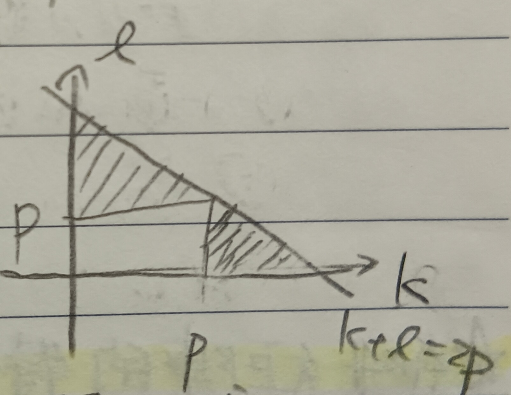

這份筆記是關於矩陣的指數的定義與計算方法及其應用。
完備度量空間
定義 1：範數 (Norm)
令\(V\)為\(\mathbb{R}\)或\(\mathbb{C}\)上的向量空間，我們說\(V\)上的範數是函數\(\|\cdot\|:V\to\mathbb{R}_{\geq
0}\)，使得對所有\(x,y\in V\),
\(a\in\mathbb{C}\) or \(\mathbb{R}\)有
1. 三角不等式：\(\|x+y\|\leq\|x\|+\|y\|\)
2. \(\|ax\|=|a|\|x\|\)
3. \(\|x\|=0\Leftrightarrow x=0\)
定義 1-1：矩陣的範數 (Norm of Matrices)
令\(V=M_{n\times n}(\mathbb{C})\)或\(M_{n\times n}(\mathbb{R})\)。對於\(A\in V\)，定義 \[ \|A\|=\max_{1\leq i,j\leq n}\{|A_{ij}|\} \] 可以驗證\(\|\cdot\|\)是一個範數。並且對於\(A,B\in V\)，還可以有 \[ \|AB\|\leq n\|A\|\cdot\|B\| \]
定義 2：度量 (Metric)
令\(X\)為一集合，我們稱\(X\)上的測度為一函數\(d:X\times X\to\mathbb{R}_{\geq
0}\)，使得對所有\(x,y,z\in X\)有
1. 三角不等式：\(d(x,y)\leq
d(x,z)+d(z,y)\)
2. \(d(x,y)=d(y,x)\)
3. \(d(x,y)=0\Leftrightarrow x=y\)
定義 3：柯西序列 (Cauchy Sequence)
考慮度量空間\((X,d)\)(這樣寫的時候代表\(X\)是一集合，其上有度量\(d\))，我們其上的說一序列\(\{a_n\}\)是柯西序列，若對於所有\(\epsilon>0\)，存在\(N>0\)使得對所有\(m,n>N\)有\(d(a_m,a_n)<\epsilon\)。
定義 4：完備度量空間 (Complete Metric Space)
我們稱度量空間\((X,d)\)是完備的，若每個\(X\)中的柯西序列都收斂到某個\(X\)中的元素。(這裡收斂的定義也是使用\(d\)作為距離。)
例 4-1
對於\(\mathbb{R}\)和\(\mathbb{C}\)，令其上的測度為\(d(x,y)=|x-y|\)，則易知\((\mathbb{R},d)\)和\((\mathbb{C},d)\)是完備的(\(\mathbb{R}\)的完備性可以參考這裡的定理8)。
註記 5
如果\(V\)上有範數，則定義\(d(x,y)=\|x-y\|\)就馬上有一個測度了。
例 5-1
由註記5可知上面定義1-1中的\(M_{n\times n}(\mathbb{C})\)是一個度量空間。並且對於\(M_{n\times n}\)中的柯西序列\(\{A_k\}\)，由定義知\(\{(A_k)_{ij}\}\)也是一個\(\mathbb{C}\)中的柯西序列(這裡\(i,j\)是固定的，變動的是\(k\))。而\(\mathbb{C}\)是完備的，故\(A_k\)的每一個元素都會收斂到\(\mathbb{C}\)中。故知\((M_{n\times n}(\mathbb{C}),\|\cdot\|)\)是一個完備度量空間。
矩陣的指數
定義 6：矩陣的指數 (Exponential of Matrices)
給定\(A\in M_{n\times n}(\mathbb{C})\)，令 \[ S_k=I+A+\frac{1}{2!}A^2+\frac{1}{3!}A^3+\cdots+\frac{1}{k!}A^k \] 若在定義1-1的\((M_{n\times n}(\mathbb{C}),\|\cdot\|)\)中\(\{S_k\}\)收斂到\(S\in M_{n\times n}(\mathbb{C})\)，則記 \[ \exp(A)=S \]
註記 6-1
對於任何\(A\in M_{n\times
n}(\mathbb{C})\)，\(\exp(A)\)都存在。
證明：給定\(q>p\)，則 \[ \begin{aligned} d(S_p,S_q)&=\|S_q-S_p\|\\ &=\left\|\frac{1}{(p+1)!}A^{p+1}+\cdots+\frac{1}{q!}A^q\right\|\\ &\leq\frac{1}{(p+1)!}\|A^{p+1}\|+\cdots+\frac{1}{q!}\|A^q\|\mbox{ (三角不等式)}\\ &\leq\frac{n^p}{(p+1)!}\|A\|^{p+1}+\cdots+\frac{n^q}{q!}\|A\|^q\mbox{ (見定義1-1)}\\ &=\frac{1}{n}\left(\frac{(n\|A\|)^{p+1}}{(p+1)!}+\cdots+\frac{(n\|A\|)^q}{q!}\right)\\ &\leq\frac{1}{n}\times\frac{(n\|A\|)^{p+1}}{(p+1)!}\left(1+\frac{n\|A\|}{(p+1)}+\frac{(n\|A\|)^2}{(p+1)^2}+ \cdots\right) \end{aligned} \] 由於\(n\)和\(\|A\|\)都是定值，故當\(p\)夠大時最後一項就可以任意小。故知\(\{S_k\}\)是柯西序列。而由例5-1，我們知道\(\{S_k\}\)會收斂到某個\(\exp(A)=S\in M_{n\times n}(\mathbb{C})\)。QED
定義 7：冪零矩陣 (Nilpotent Matrix)
對於矩陣\(M\)，若存在\(n\in\mathbb{N}\)使得\(M^n=0\)，則稱\(M\)是冪零的。
註記 8
令矩陣\(J\)是約旦典型形式，則可以令\(J=D+M\)，其中\(D\)是對角矩陣。則\(M\)會是冪零矩陣(證略)。
定理 9
對於\(A,B\in M_{n\times n}(\mathbb{C})\)，若\(AB=BA\)，則 \[ \exp(A)\exp(B)=\exp(A+B) \]
證明：我們有 \[ \frac{1}{m!}(A+B)^m=\sum_{k+l=m}\frac{A^k}{k!}\frac{B^l}{l!} \] 而考慮\(\exp(A+B)\)的部分和，有 \[ \sum_{m=0}^{2p}\frac{1}{m!}(A+B)^m=\left(\sum_{k=0}^p\frac{A^k}{k!}\right)\left(\sum_{l=0}^p\frac{B^l}{l!}\right)+R_p\mbox{ (☆)} \] 其中\(R_p\)是 \[ R_p=\sum_{\substack{k+l\leq 2p\\ \max\{k,l\}>p}}\frac{A^k}{k!}\frac{B^l}{l!} \] 而由定義1-1，我們知道 \[ \|A^kB^l\|\leq\|A\|^k\|B\|^ln^{k+l-1} \] 參考下方的圖1，其中下圖1的陰影部分是\(k+l\leq 2p, \max\{k,l\}>p\)，故不包含白色長方形的邊界。我們可以發現陰影區域的格子點數不超過 \[ 2(1+2+\cdots+p)=p(p+1) \] 故\(R_p\)中的項數不超過\(p(p+1)\)。
令\(C=\max\{\|A\|,\|B\|,1\}\)，則當\(p\to\infty\)時， \[ \|R_p\|=p(p+1)\frac{C^{2p}n^{2p}}{(p!)(p!)}=\frac{p(p+1)(nC)^{2p}}{(p!)^2}\to 0 \] 故在(☆)式中令\(p\to\infty\)，有 \[ \exp(A)\exp(B)=\exp(A+B) \] QED
註記 10
給定\(A\in M_{n\times n}(\mathbb{C})\)，並假設\(A\)的特徵多項式分裂。則由這裡的定理10~12，我們知道\(A\)可以化為約旦典型形式。令其約旦典型形式為\(J\)，並令\(Q\)是使得\(Q^{-1}AQ=J\)的轉換矩陣。則 \[ Q^{-1}\exp(A)Q=\exp(J) \]
證明：根據定義有 \[
\exp(J)=\lim_{p\to\infty}\sum_{m=0}^p\frac{1}{m!}J^m=\lim_{p\to\infty}\sum_{m=0}^p\frac{1}{m!}(Q^{-1}AQ)^m
\] 又 \[
\begin{aligned}
(Q^{-1}AQ)^m&=(Q^{-1}A\bcancel{Q)(Q^{-1}}A\bcancel{Q)\cdots}\bcancel{\cdots(Q^{-1}}AQ)\\
&=Q^{-1}A^mQ
\end{aligned}
\] 故 \[
\exp(J)=\lim_{p\to\infty}Q^{-1}\left(\sum_{m=0}^p\frac{1}{m!}A^m\right)Q=Q^{-1}\exp(A)Q
\] QED
於是，我們只要計算\(\exp(J)\)就能算出\(\exp(A)\)了。
註記 11
對於約旦典型形式矩陣\(J\)，令\(J\)是\(k\times k\)矩陣且 \[ J=\left( \begin{array}{cccc} \lambda & 1 & & 0\\ & \lambda & 1 & \\ & & \ddots & \\ 0 & & & \lambda \end{array} \right) \] 使用註記8中的符號\(J=D+M\)，可得 \[ D=\lambda I_k, M^{k-1}\neq 0, M^k=0, DM=MD \] 故 \[ \begin{aligned} \exp(tJ)&=\exp(tD+tM)\\ &=\exp(tD)\exp(tM)\mbox{ (定理9)}\\ &=\left( \begin{array}{cccc} e^{t\lambda} & & & 0\\ & e^{t\lambda} & & \\ & & \ddots & \\ 0 & & & e^{t\lambda} \end{array} \right)\times\left(1+tM+\frac{1}{2!}(tM)^2+\cdots+\frac{1}{(k-1)!}(tM)^{k-1}\right)\\ &=e^{t\lambda}\left( \begin{array}{ccccc} 1 & t & \frac{t^2}{2} & \cdots & \frac{t^{k-1}}{(k-1)!}\\ & 1 & t & \ddots & \vdots\\ & & \ddots & \ddots & \vdots\\ & & & & t\\ 0 & & & & 1 \end{array} \right) \end{aligned} \]
線性微分方程組
定理 12
對於在註記11中給定的約旦典型形式矩陣\(J\)，我們有 \[ \frac{d}{dt}\left(\exp(tJ)\left( \begin{array}{c} a\\ b\\ c\\ d \end{array} \right)\right)=J\exp(tJ)\left( \begin{array}{c} a\\ b\\ c\\ d \end{array} \right) \]
證明：令 \[ \vec{x}(t)=\exp(tJ)\left( \begin{array}{c} a\\ b\\ c\\ d \end{array} \right) \] 由註記11，我們有 \[ \exp(tJ)\left( \begin{array}{c} a\\ b\\ c\\ d \end{array} \right)=e^{t\lambda}\left( \begin{array}{c} f(t)\\ f'(t)\\ f''(t)\\ f'''(t) \end{array} \right) \] 其中 \[ f(t)=a+bt+\frac{t^2}{2!}c+\frac{t^3}{3!}d \] (這裡略過了計算過程)。而因\(f^{(4)}(t)=0\)，故有 \[ \begin{aligned} \frac{d}{dt}\vec{x}(t)&=e^{t\lambda}\left( \begin{array}{c} \lambda f(t)+f'(t)\\ \lambda f'(t)+f''(t)\\ \lambda f''(t)+f'''(t)\\ \lambda f'''(t) \end{array} \right)\\ &=\left( \begin{array}{cccc} \lambda & 1 & & 0\\ & \lambda & 1 & \\ & & \lambda & 1\\ 0 & & & \lambda \end{array} \right)\cdot e^{t\lambda}\left( \begin{array}{c} f(t)\\ f'(t)\\ f''(t)\\ f'''(t) \end{array} \right)\\ &=J\exp(tJ)\left( \begin{array}{c} a\\ b\\ c\\ d \end{array} \right)=J\vec{x}(t) \end{aligned} \] QED
註記 12-1
沿用定理12的符號，我們可以把定理12的結論寫成 \[ \frac{d}{dt}(\exp(tJ)\vec{x}(0))=J\exp(tJ)\vec{x}(0) \]
推論 12-2
給定微分方程組 \[ \frac{d}{dt}\vec{x}(t)=A\vec{x}(t), A\in M_{n\times n}(\mathbb{C}) \] 則令\(J\)是\(A\)的約旦典型形式，並令\(J=Q^{-1}AQ\)，則\(A=QJQ^{-1}\)。則 \[ \begin{aligned} &\frac{d}{dt}\vec{x}(t)=(QJQ^{-1}\vec{x}(t))\\ \Rightarrow&\frac{d}{dt}(Q^{-1}\vec{x}(t))=J(Q^{-1}\vec{x}(t))\\ \end{aligned} \] 而由定理12與註記12-1，我們知道此方程組的解滿足 \[ Q^{-1}\vec{x}(t)=\exp(tJ)(Q^{-1}\vec{x}(0)) \] 故由註記11知 \[ \vec{x}(t)=Q\exp(tJ)Q^{-1}\vec{x}(0)=\exp(tA)\vec{x}(0) \]